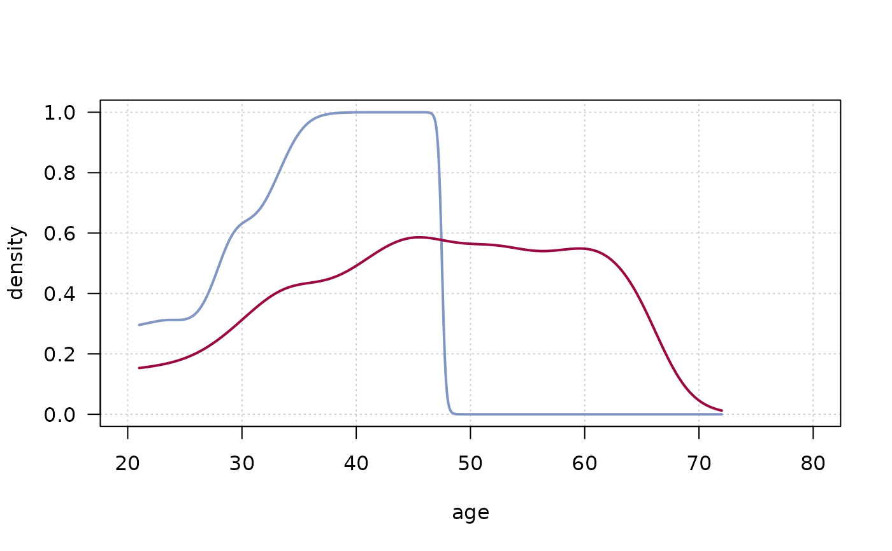

PlotConDens.RdPlot conditional densities by group. For describing how the conditional distribution of a categorical variable y changes over a numerical variable x we have the function cdplot. But if we want to compare multiple densities much work is required. PlotConDens allows to easily enter a grouping variable.
PlotConDens(formula, data, col = NULL, lwd = 2, lty = 1, xlim = NULL, rev = TRUE, args.dens = NULL, ...)
| formula | a |
|---|---|
| data | a data frame containing values for any variables in the formula. By default the environment where |
| col | a vector of colors to be used to plot the lines. If too short, the values are recycled. |
| lwd | a vector of linewidths to be used to plot the lines. If too short, the values are recycled. |
| lty | a vector of linetypes to be used to plot the lines. If too short, the values are recycled. |
| xlim | the range for the x axis. |
| rev | logical, should the values of the response variable be reversed? Default is |
| args.dens | additional arguments for the densitiy curves. |
| ... | the dots are passed on to |
Especially when we're modelling binary response variables we might want to know, how the binary variable behaves along some numeric predictors.
the functions for the curves
Andri Signorell <andri@signorell.net>
data(Pima.tr2, package="MASS") PlotConDens (type ~ age | I((npreg > 0)*1L), data=Pima.tr2, col=c(hblue, hred), rev=FALSE, panel.first=quote(grid()))